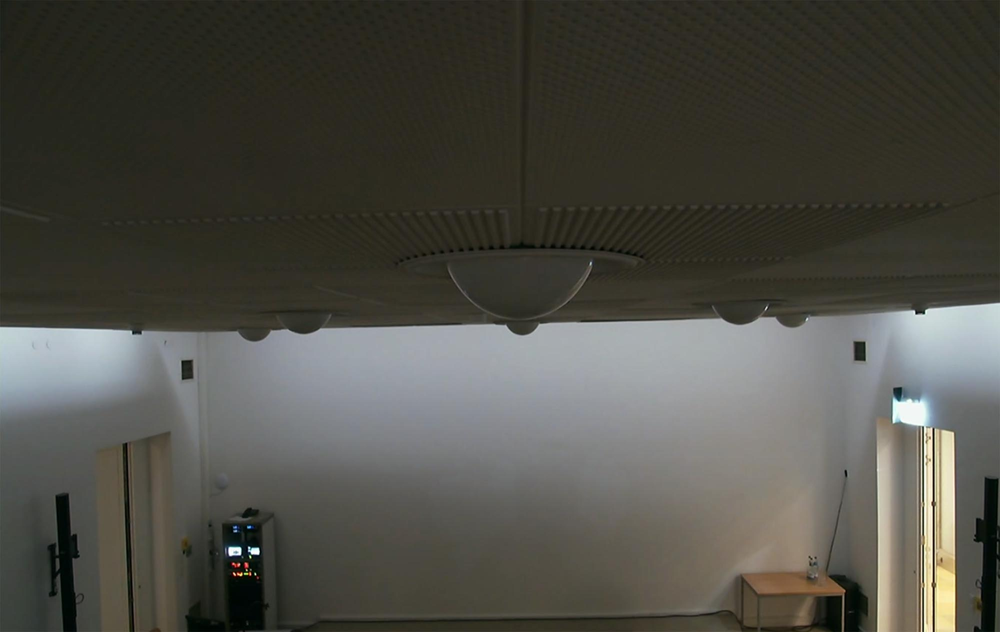
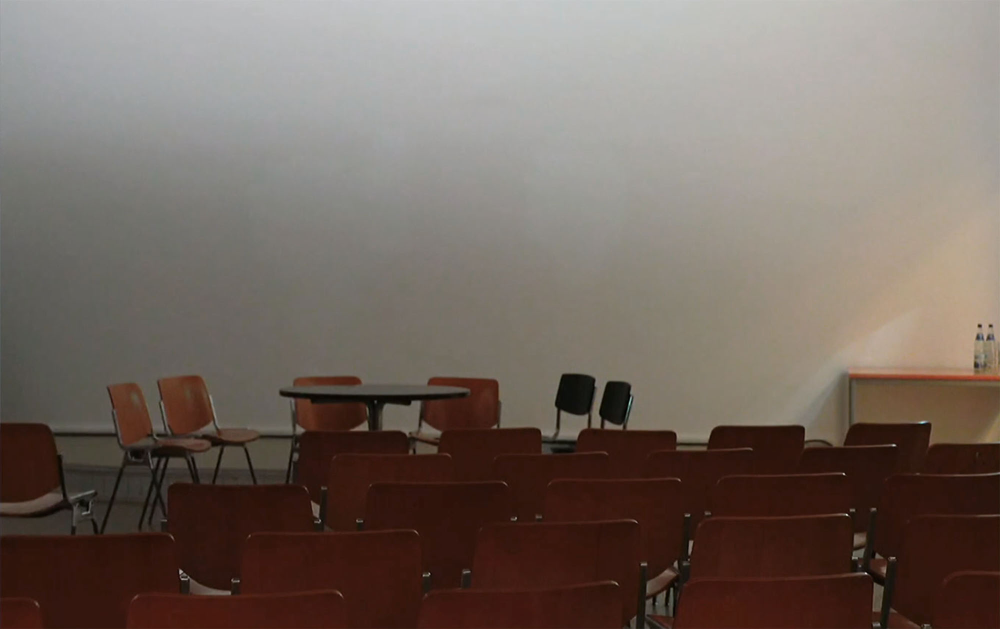

DEAD TIME (Melody's Warm Up), 2022
Site-specific adaption
Cello tonalization: Melody Giron
Scoring, timing: Cally Spooner
Studio recording: Jesse Lewis
Audio gain staging: Tom Sedgwick
with Cally Spooner
Mastering: Stephan Mathieu Schwebung
43 minutes, 59 seconds, environmental dimensions